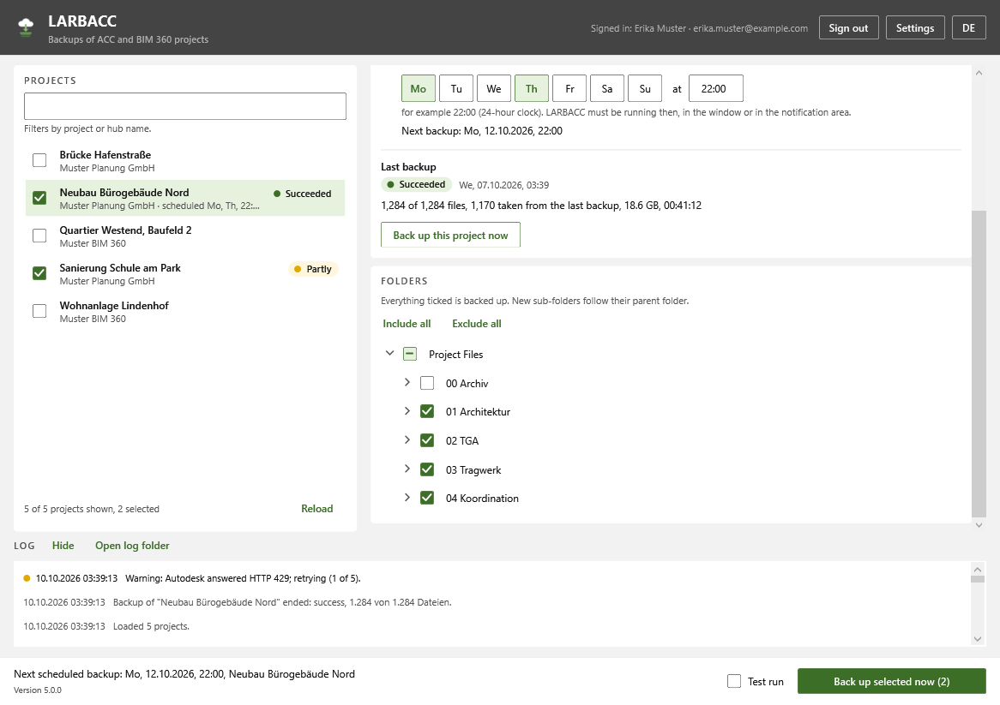
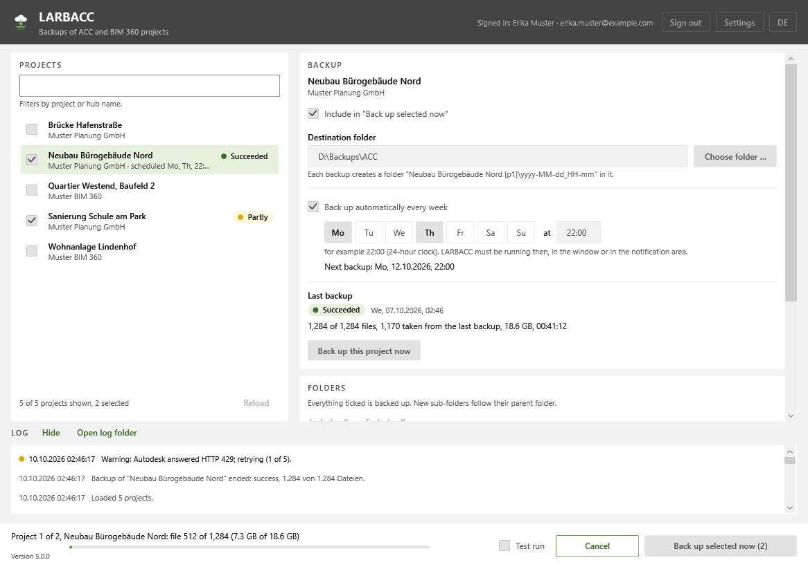
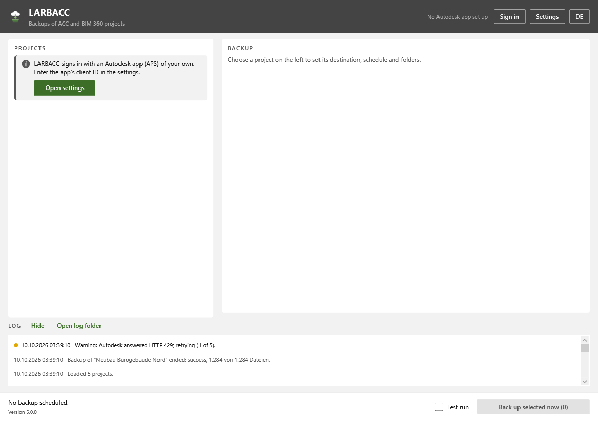
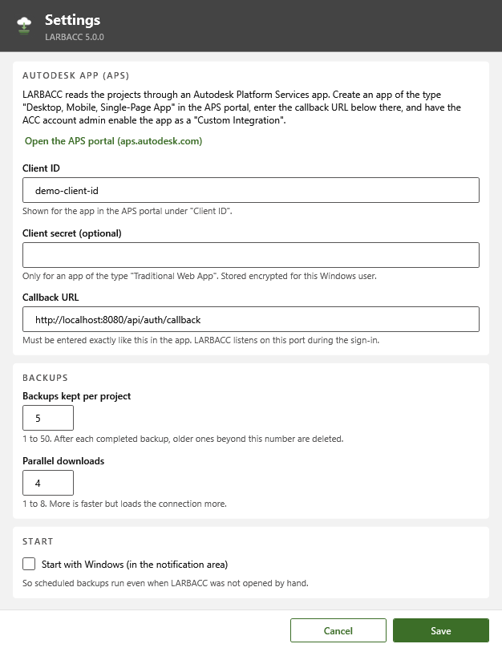

LARBACC
Stored in the cloud is not the same as backed up.
- C#
- .NET 8
- WPF
- Autodesk Platform Services (PKCE)
- Data Management API
Many construction teams keep all their project files in Autodesk Construction Cloud, an online file platform. If a folder is deleted there or a subscription ends, the files can be lost. LARBACC copies the projects you choose to your own drive every week and keeps the last few copies.
The problem
Projects in Autodesk Construction Cloud feel safe because they live in the cloud. A deleted folder or an ended subscription can still take years of work with it.
What it does
LARBACC (Local, Automatic, Rotating Backups of Autodesk Construction Cloud) keeps dated copies of ACC and BIM 360 projects on a local or network drive. You choose projects and folders, a destination and a weekly time; LARBACC downloads the latest version of every document and keeps the last few backups. The interface is in German and English.
Only changes are downloaded. A document that has not changed since the previous backup is linked to the earlier copy instead of downloaded again (a file-system feature called a hard link), so later runs are fast and five backups do not take five times the space. A run only counts as a backup once its complete file list is written, so a crash or power cut never leaves a half-finished folder that looks complete.
Sign-in uses a secure method (PKCE) that needs no secret key inside the program. A backup missed while LARBACC was closed runs at the next start, and a failed one is retried after 15 minutes, 1 hour and 4 hours.
Features
- Choose ACC and BIM 360 projects, folders and a destination; the latest version of every document is saved under its ACC name
- One dated folder per project and run, with a report and a list of every file and its ACC version
- Unchanged documents are linked to the previous backup instead of downloaded again
- Keeps the last few backups per project (5 by default) and never deletes anything after a run that had failures
- A run only becomes a backup once its file list is written; failed and cancelled runs are kept and labelled
- Include or leave out any folder; new folders follow the choice made for their parent folder
- Weekly schedule on any days and time, running from the Windows notification area and optionally starting with Windows
- Missed backups run at the next start; failed ones are retried after 15 minutes, 1 hour and 4 hours
- Secure sign-in (PKCE) with no secret key shipped in the program; an optional key is stored encrypted for the Windows user
- 1 to 8 downloads at once, a test run that downloads nothing, and daily logs
- German and English interface
Terms on this page
- BIM
- Building Information Modelling: designing a building as a shared 3D model that also holds data about every part, instead of separate drawings.
- ACC / BIM 360
- Autodesk Construction Cloud, an online platform where project teams store and share models and documents. BIM 360 is the older version.
See it
Screenshots & demos




